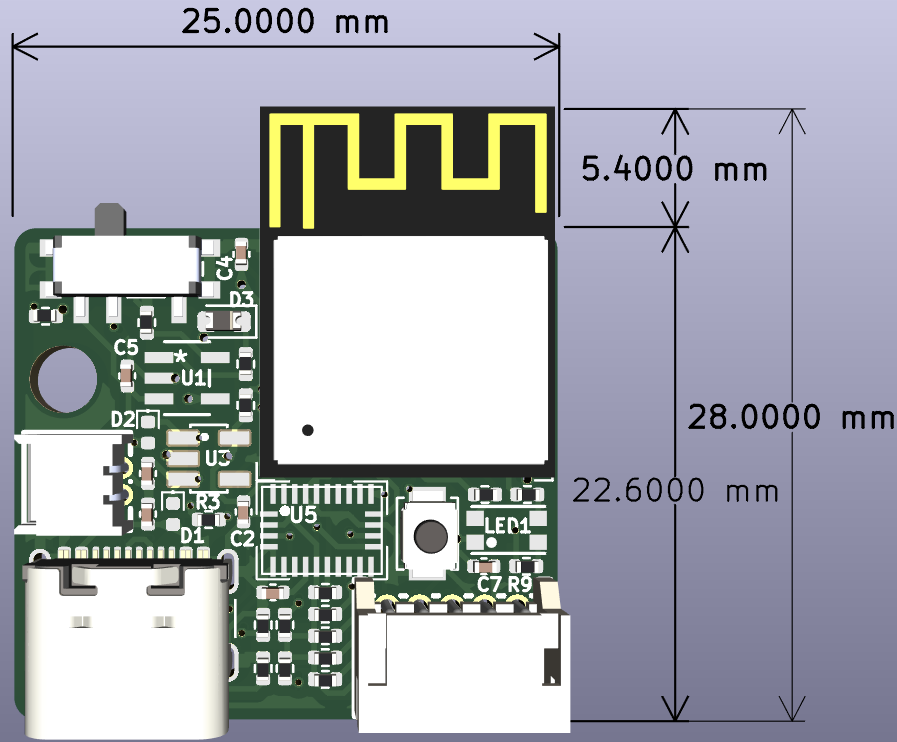
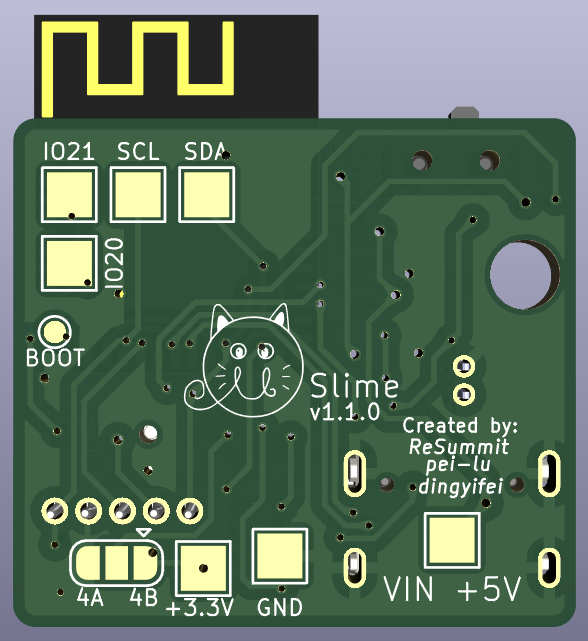
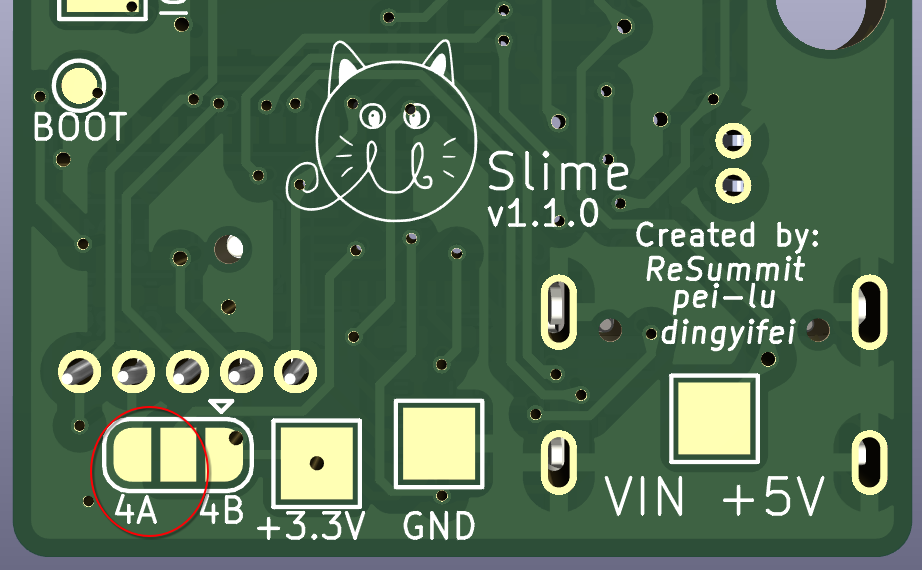

01 / Embedded hardware
uSlime VR
Reducing the size and weight of a SlimeVR tracker PCB to address motion-induced wobble caused by the original tracker's weight and balance.
Inside the project
The hardware work focused on a compact tracker layout. A logic analyzer captured I²C communication between the ESP32 and BNO085, helping identify a problem in the timing circuit during development.
Focus: PCB miniaturization, motion tracking, and hardware debugging.


